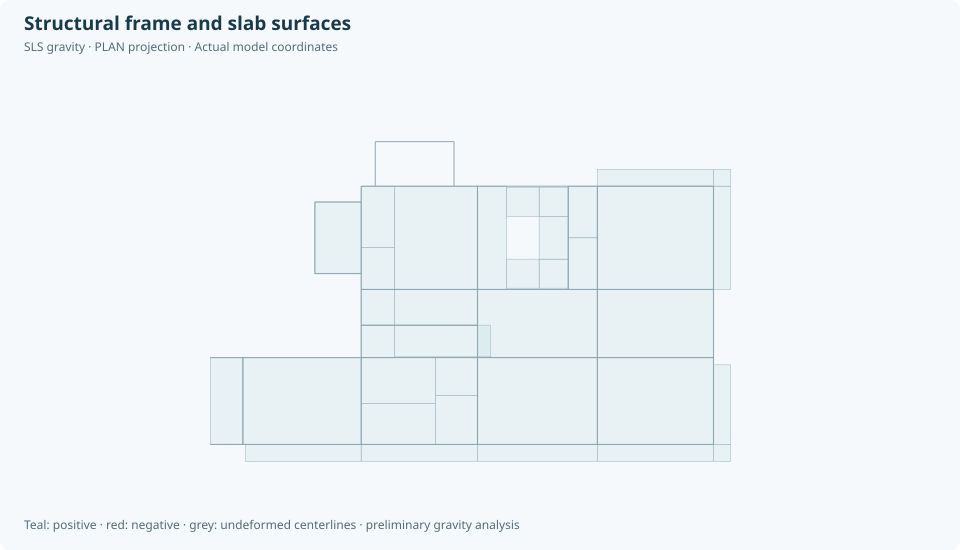

PROJECT PORTFOLIO
Structures
Project-specific geometry, structural actions and material studies.

01 / RESIDENTIAL
Narayani Parajuli
Three-level reinforced concrete residence. Explore the structural model, geometry alternatives, seismic response, member sections and quantity schedules.
02 / REGISTERED PROJECT
Harisharan
Project-specific structural results are not included in this collection.
Calculation schedules
Explore the published material schedules and member assessment tables.